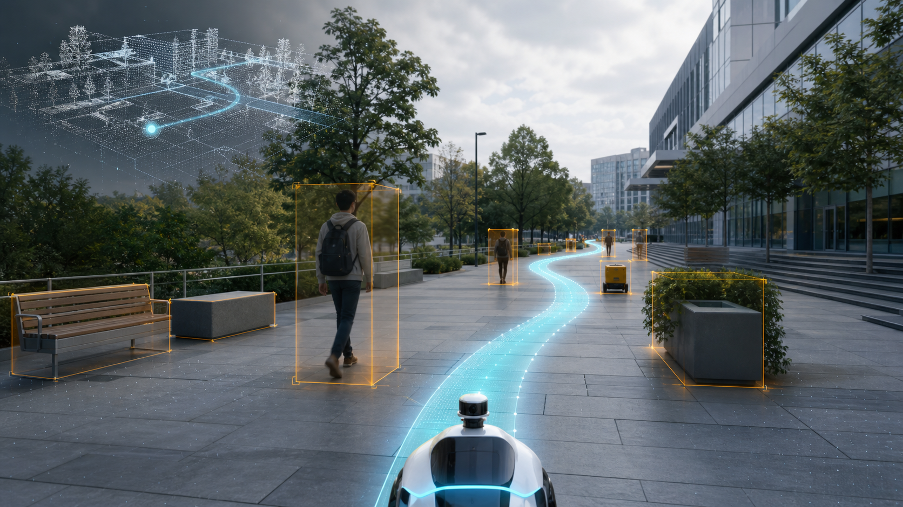
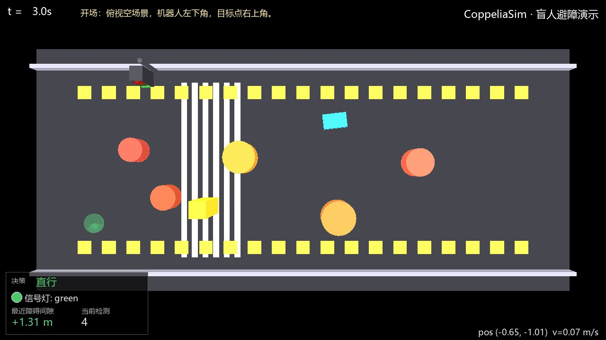
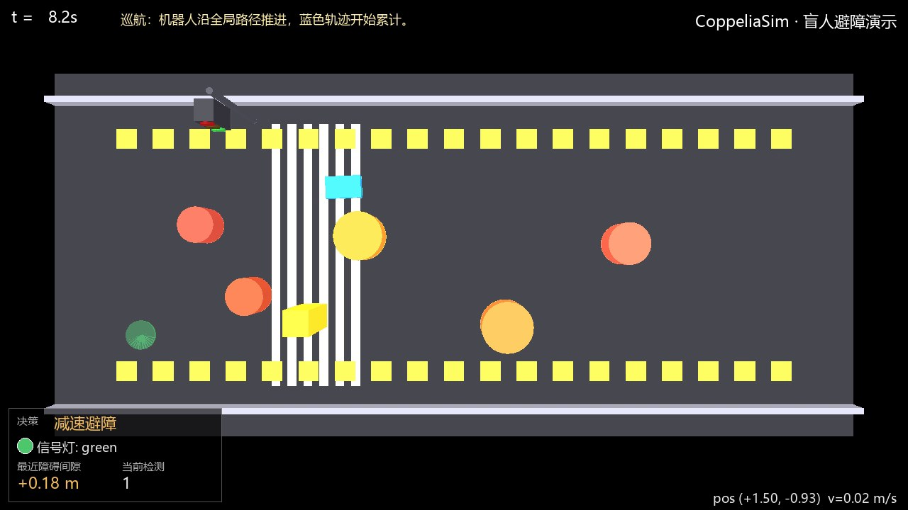
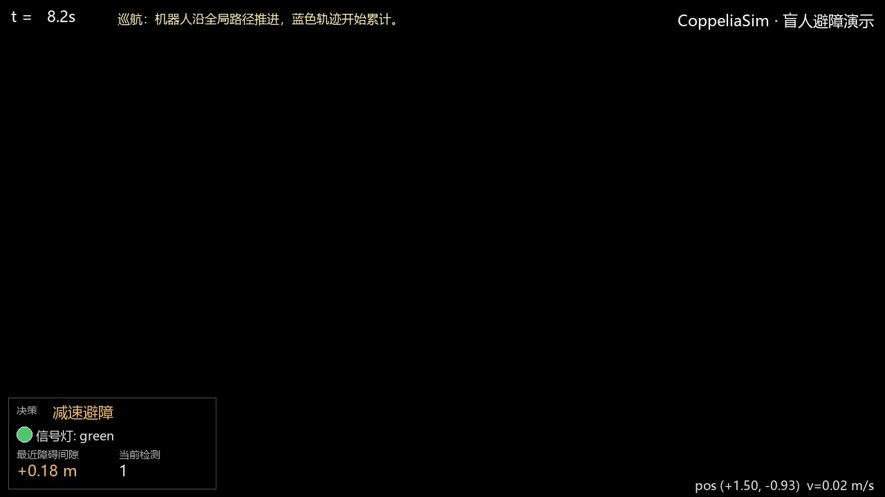

01 / Generated world
生成一个世界之后，机器人能否真正穿过它？
项目把腾讯混元生成的 Mesh 接入 CoppeliaSim，以视觉世界、占据栅格和机器人动力学构成导航实验。全局 A* 决定方向，Hybrid Planner 根据动态障碍、空间密度和卡死状态切换局部策略。
GENERATE
RECONSTRUCT
PERCEIVE
NAVIGATE
RECORD
02 / Hybrid navigation
WORLD
TO
WAYPOINT.
蓝色点云表达生成世界，橙色轨迹表达机器人行为。开阔区域使用 APF 保持平滑；密集与动态场景切换 DWA；连续缓停时可由 RL 跳出局部最小。
322 steps一次完整运行
9.46 m实际路径长度
98 detections感知记录
0 collisions成功到达目标

HUNYUAN WORLD / DWA RUN


